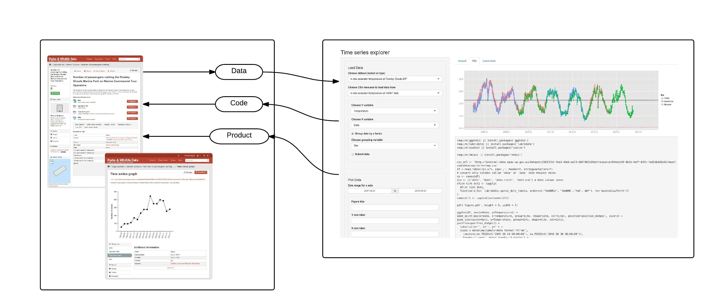

Your browser doesn't support the features required by impress.js,
so you are experiencing this presentation in reduced fun mode.
Use Chrome, Safari or Firefox to unleash the awesomeness.
data.wa.gov.au
taking the "ow" out of the "how"
Wisdom
defensible insight
Knowledge
transparent
Information
reproducible
Data
discoverable & accessible
Data
Datacats = CKAN + Docker
spatial, scheming, harvest et al.
govhack2015.readthedocs.org
source install = control
hosted solution = ease of use
Analysis
Data + Code = Product
RStudio Server = hosted R IDE
RShiny Server = hosted interactive R apps

Reporting
CKAN o' Sweave
CKAN + R + Latex + git + https = PDF
data.wa.gov.au
data.landgate.wa.gov.au
data.dpaw.wa.gov.au
data.epa.wa.gov.au
data.sro.wa.gov.au
data.aboriginalaffairs.wa.gov.au
data.agriculture.wa.gov.au
data.museum.wa.gov.au